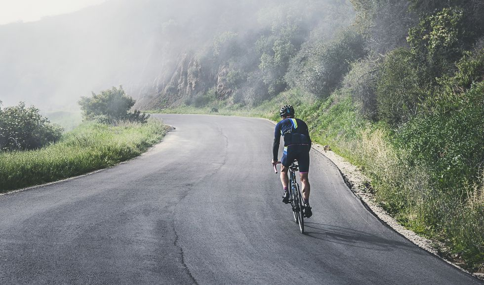
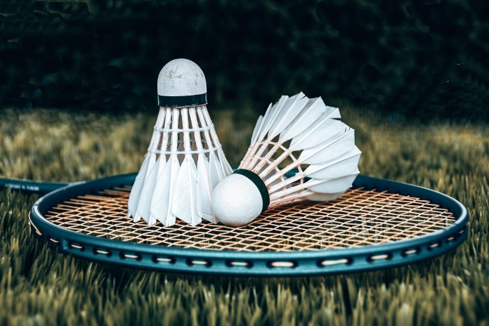

Music

Music is my love.
Cycling
As a cyclist, there’s nothing like a long ride to bring a sense of accomplishment, for beginners and seasoned pros alike. Now if you’re relatively new to the sport, or have yet to attempt anything longer than two hours, there’s no need to feel intimidated; successful, long-distance cycling often comes down to strategy and planning, and not just fitness.
Badminton
Badminton, tennis’s lesser-known cousin (which is still an olympic sport!), is easy to learn, a fun social activity and provides numerous physical benefits. So if you’re in need of a good workout, head to your backyard or your local gym for a recreational match against a friend or two. Badminton is a racket sport played on a rectangular court. Players score by hitting a shuttlecock, or birdie, with their racket over the net and in their opponents’ half of the court.